2026
Georgia Rogers
I am an industrial design student but deep down I am and always will be, a photographer
Passion of the Frame
This is the portfolio website for my best and proudest photography work. All images were taken and edited entirely by me.
Exploration of Bokeh
These images were my first exploration in the world of bokeh. It sparked my interest in using lighting and colours in more ways than the traditional photography methods. I made this to show colour and light in abstract forms. I am incredibly proud of these images, and I think they show pure beauty.
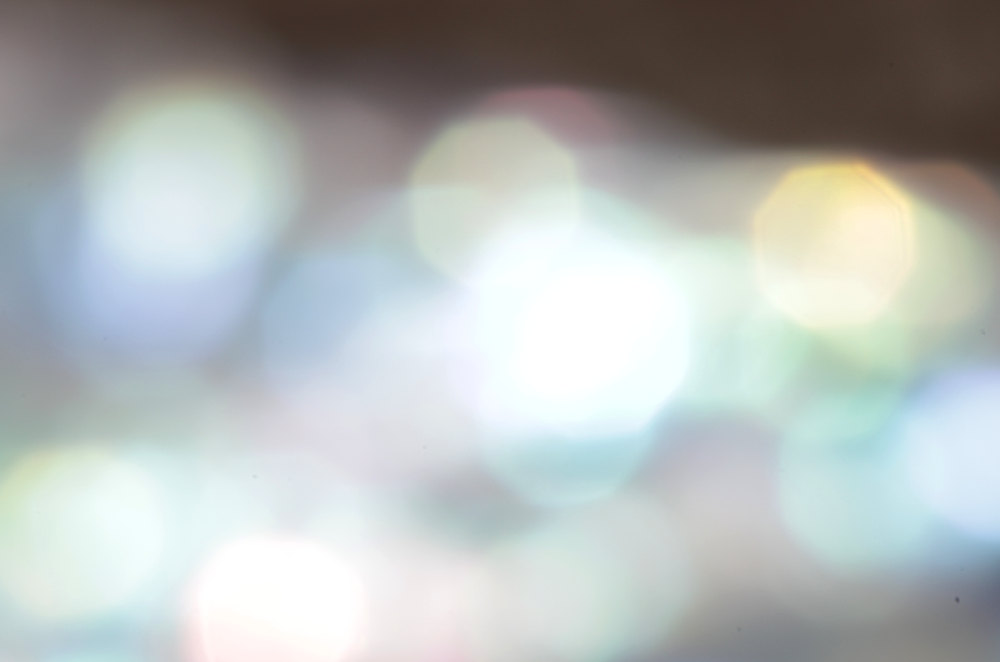
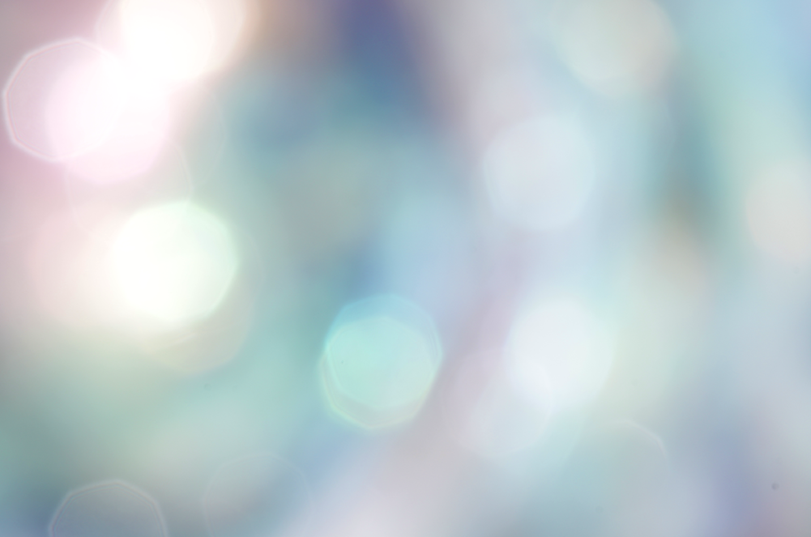
Power of Paua
This project shows the absolute beauty of the Paua shell. Paua is something originally so small found in the ocean, used primarily as food or decorations in cultral maori artworks. In my work, I have framed the images so that no scale is visible and I have utalised the colour that the Paua has. Through these images, it is clear to anyone that there is clear, intense beauty in something that began so small.
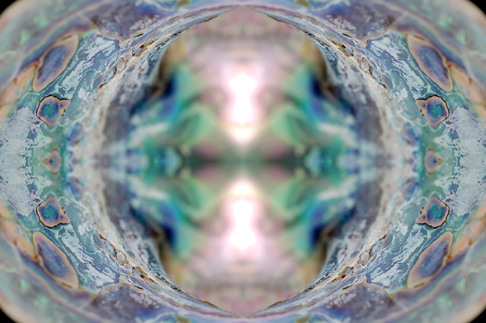
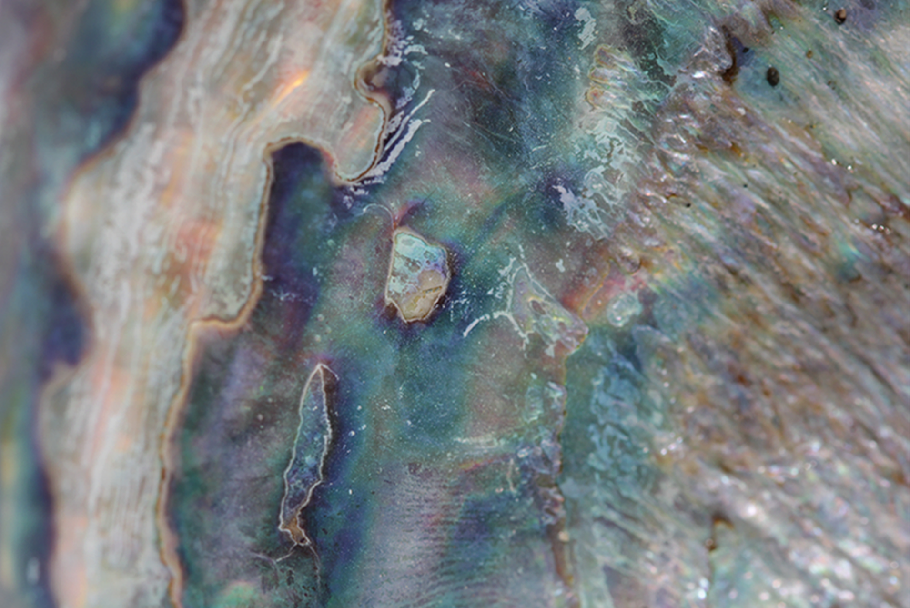
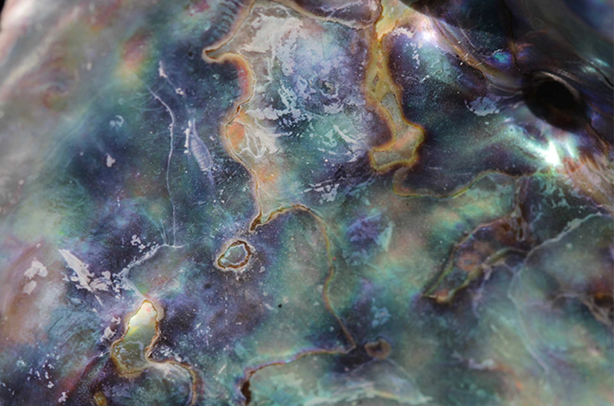
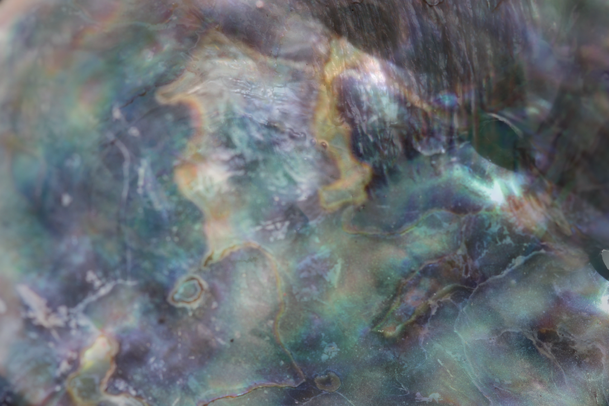
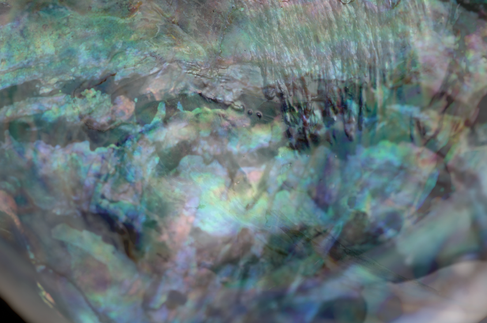
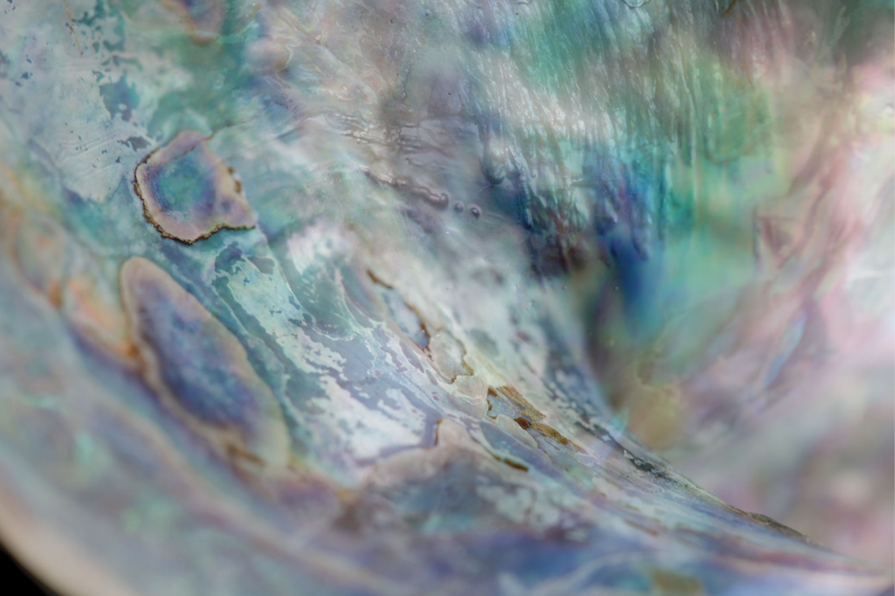
Art in new forms
This series was inspired by french artist Monet's 'Water Lilies' series. When I first saw his work I was encapsulated by the simplistic idea presented in such a stunning, detailed way. By using my own methods and art style, I made cherry blossoms and water reflection into my own emulation of the great artists work.
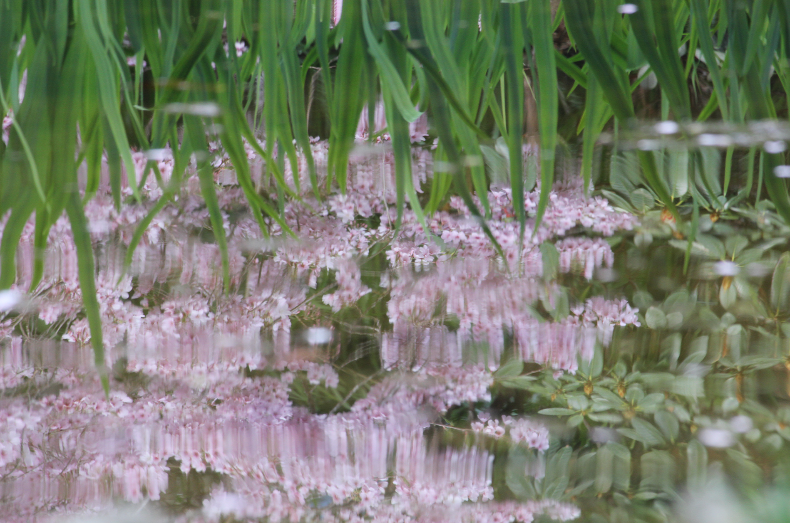
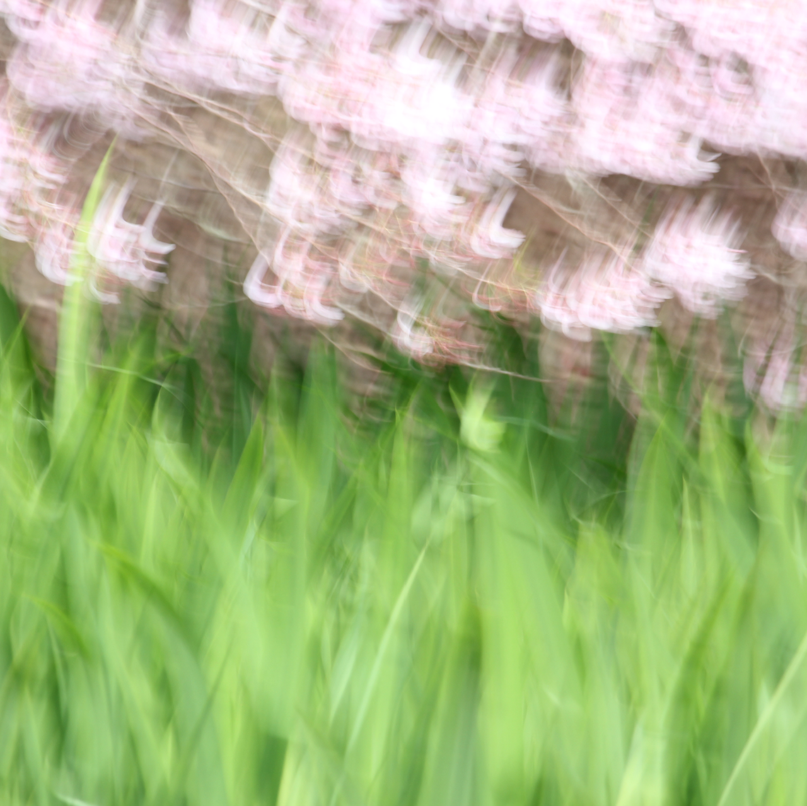
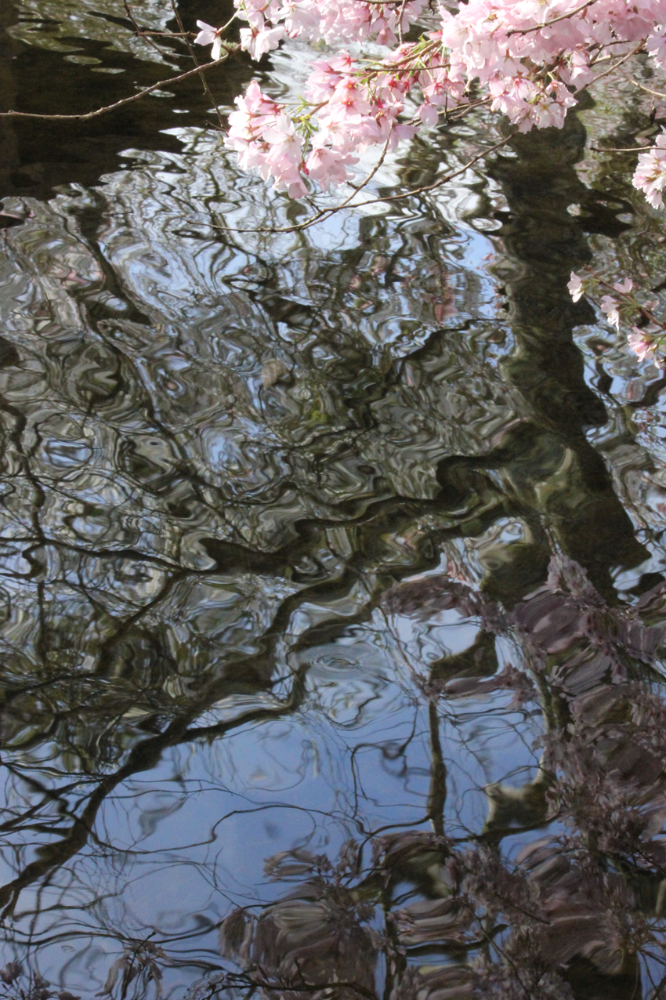
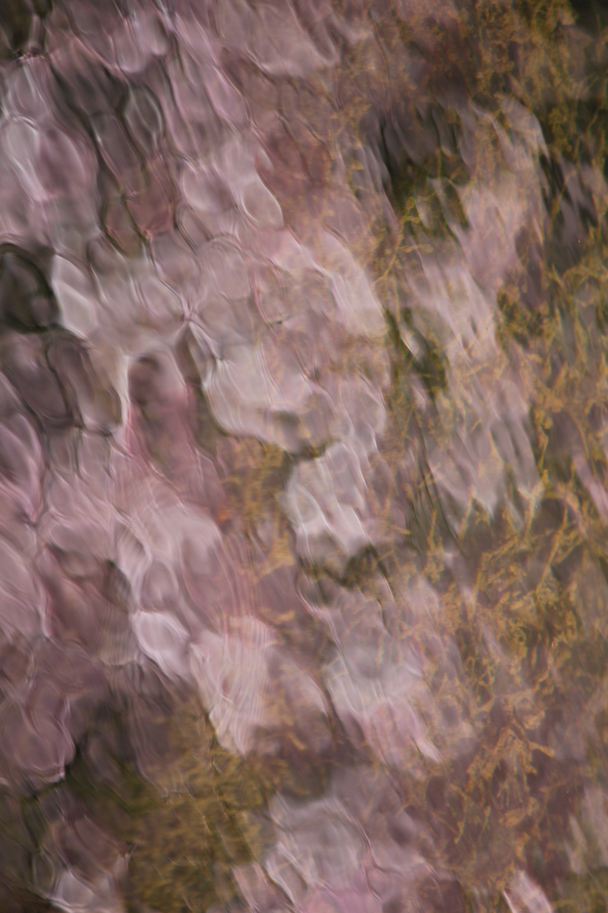
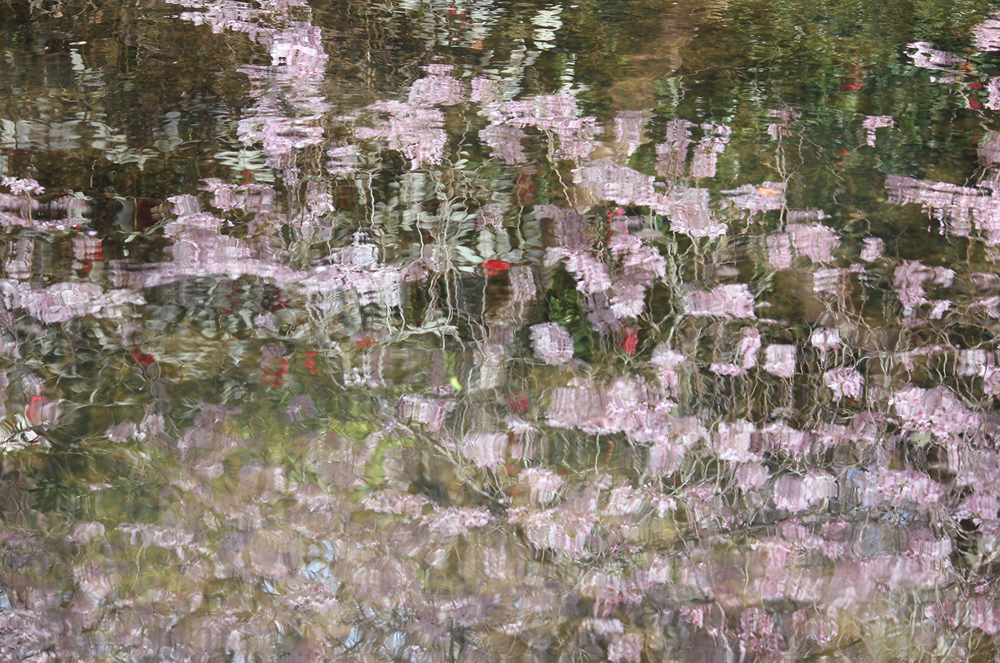
DSDN142
Personal Project
This project is about the abstract and obvious beauty of water. Evolving from "art in new forms" using water's reflections, in my personal project I used water directly, showing the movement and shapes to create sharp, eye capturing images. Originally I set out to make work that used water reflecting light, as seen in shoot 3, but along the way I saw the movement of the waves which created the downward line in shoot 1. I also saw the aftermath of the waves, where something so strong makes such fragile things, bubbles.
The idea of a personal project to me, needed to be something personal, whether my university major, or just something I love. I spend so much of my time in water, and I really love photography, so merging the two creates inspiration that fits who I am.
Way of Water · 2026
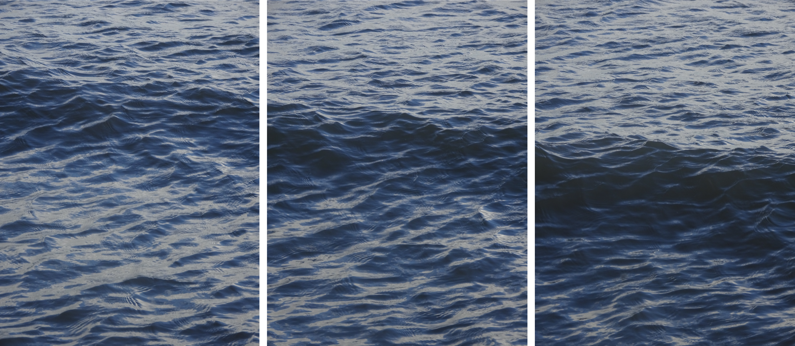
Honourable Mentions
These are some images from the final photoshoot that deserve a honerable mention. They are GORGEOUS!!!


About me
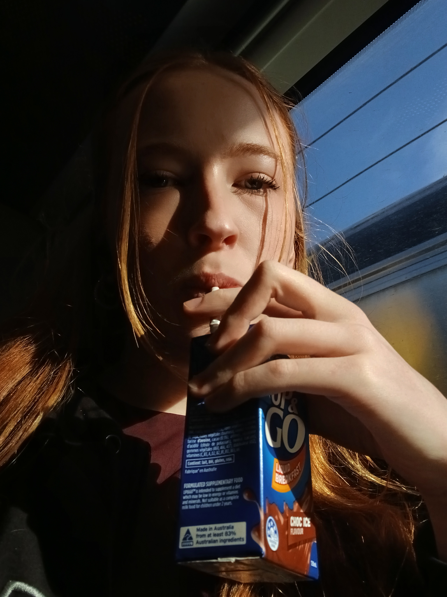
My name is Georgia Rogers, and I am a design student at Victoria University of Wellington.
Born and raised in Lower Hutt, I've been artistic my whole life. My whole family is crafty, mums a primary school teacher, my sister is a concept design student as Massey doing her Masters program and my dads an author. I go to VUW, majoring in industrial design. You might be wondering why my portfolio website is about photography instead of product design and honestly, I considered switching for a while. But then I realised that this page was an oppertunity for me to make something I am passionate about that I haven't gotten to do in a while. I did photography in highschool, for 3 years infact, but not at university thusfar. So I took this website as an oppertunity to "stretch my legs" or un-cap the lense once more and did something I am incredibly proud of. I take inspiration from my family and I hope to follow in their footsteps, following my passions and living life to the fullest.